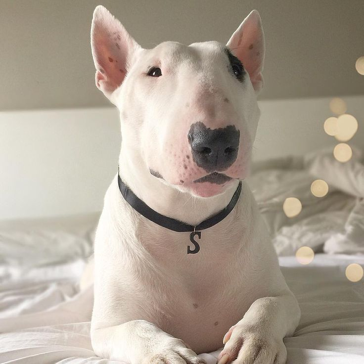
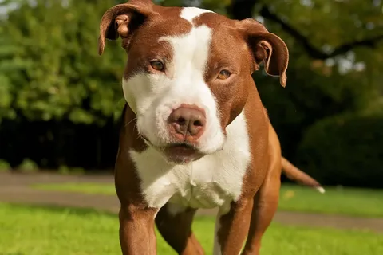
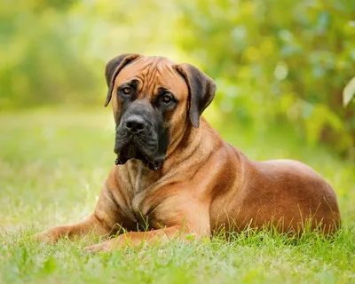
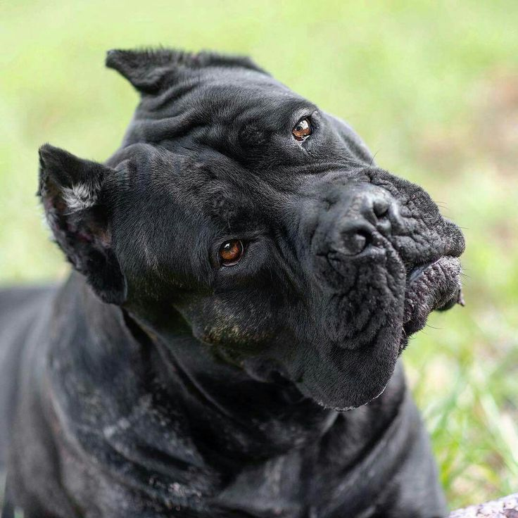
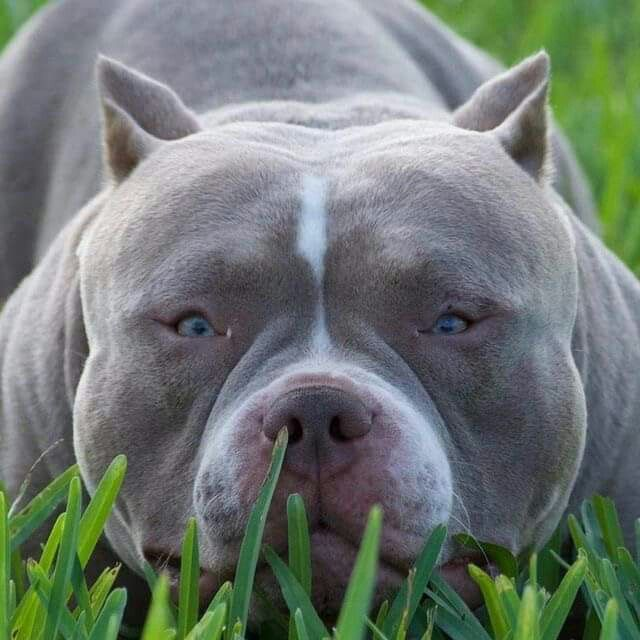
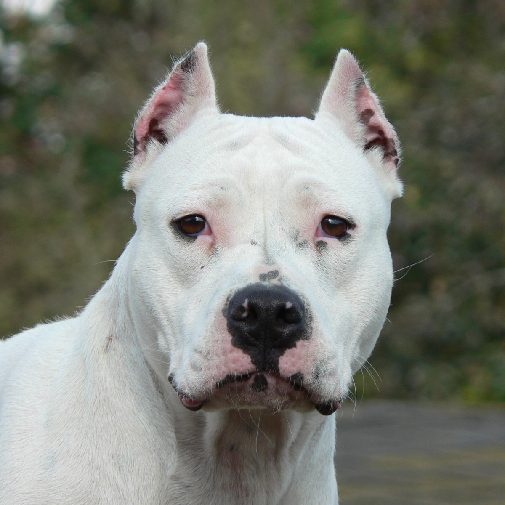

Бойцовские породы собак, их экстерьер, темперамент
Общая информация о бойцовских собаках
Понятие «бойцовские породы собак» является условным. Оно не признано кинологами официально.
В наши дни собачьи бои запрещены в ряде стран, в том числе и в России. Эти кровавые зрелища признаны негуманными и жестокими.
Сейчас бойцовские собаки – это великолепные компаньоны и уравновешенные животные. Несмотря на стереотипы, питомцы не переняли агрессивные повадки своих предков и выводились исключительно миролюбивыми и ласковыми. Об их принадлежности к категории бойцовых говорят лишь исторические факты.
Топ самых распространенных пород бойцовских собак
Бультерьер
Страна происхождения: Великобритания
Время зарождения породы: XIX век
Вес: 23-32 кг
Рост (высота в холке): 53-56 см
Продолжительность жизни: 11-14 лет
Бультерьер — это порода собак, известная своим уникальным внешним видом и характером. Одной из наиболее заметных особенностей является его "яйцеобразная" голова и короткая морда, придающие ему необычный и запоминающийся вид. У бультерьеров крепкое и мускулистое тело, короткая шерсть и мощные конечности.
По темпераменту бультерьеры обычно энергичны, игривы и дружелюбны, но могут проявлять упрямство. Они привязаны к своим хозяевам и нуждаются в достаточной физической активности и внимании.
Бультерьер не самый лучший вариант для охраны, поскольку редко проявляет агрессию даже по отношению к чужакам.
Собака нуждается в ранней социализации и воспитании, иначе вырастет неуправляемой и озлобленной. Эти английские аристократы подходят только для опытных собаководов, которые займут позицию лидера и не уступят её четверолапому другу.
Питбуль
Страна происхождения: США
Вес: кобели 16-27 кг, суки 14-23 кг
Рост (высота в холке): кобели 46-53 см, суки 43-51 см
Продолжительность жизни: 12-15 лет
Питбули имеют мускулистое, компактное строение, широкую голову и короткую морду. Шерсть короткая и гладкая, может иметь различные окрасы.
По характеру питбули, как правило, очень дружелюбны, преданы и общительны, особенно к своим хозяевам и членам семьи. Они могут быть игривыми и хорошими компаньонами, однако из-за своей силы и иногда упрямого характера им требуется тщательное обучение и социализация с раннего возраста.
Питбультерьеры очень любят грызть. Чтобы мебель в доме не пострадала, покупайте своему любимцу крепкие игрушки, и чем больше, тем лучше.
Боевой дух этого «американца» нужно постоянно обуздывать, поэтому его владелец должен быть человеком с твердым характером, чтобы суметь обучить собаку и в дальнейшем поддерживать в ней дисциплину.
Бурбуль
Страна происхождения: Южная Африка
Вес: кобели 65-80 кг, суки 50-65 кг
Рост (высота в холке): кобели 64-70 см, суки 59-65 см
Продолжительность жизни: 10-12 лет
Бурбуль — это крупная и мощная собака с кузовом квадратной формы и крепкими мускулами. У него широкая голова, сильные челюсти и выразительные глаза. Шерсть короткая, гладкая и представлена в различных окрасах: тигровом, черном, рыжем, палевом и других. Бурбуль обладает уверенной и мужественной осанкой, что подчеркивает его защитные качества.
Южноафриканский бурбуль надежен как скала, когда речь заходит о сохранности хозяйского имущества. Если дело доходит до защиты жизни человека, то здесь животное не проявляет избирательности и с одинаковым рвением охраняет как собственного владельца, так и членов его семьи.
Правильно воспитанный бурбуль очень терпелив по отношению к детям и легко прощает малышне даже не самые приятные для него проказы.
Желание доминировать и играть роль альфа-самца у бурбуля выражено достаточно ярко, поэтому собаке необходим опытный владелец, который не позволит собой манипулировать.
Кане-корсо
Страна происхождения: Италия
Вес: кобели 45-50 кг, суки 40-45 кг
Рост (высота в холке): кобели 64-68 см, суки 60-64 см
Продолжительность жизни: 9-11 лет
Кане-корсо — это крупная и мускулистая собака с мощным телосложением и выразительной внешностью. У нее широкая голова с сильными челюстями, большие и выразительные глаза, а также короткая, плотная шерсть, которая бывает разных окрасов, включая черный, серый, тигровый и палевый.
Представители породы крепки и выносливы, отличаются умом и сообразительностью, нуждаются в постоянной физической и умственной активности. Эта собака обладает отличными охранными качествами. Кане-корсо присущи доброта и внимательность, они ласковы с хозяином и требуют взаимности.
Некоторая властность пса может оказаться трудным испытанием для неопытных владельцев, поэтому, если вы впервые решили завести себе четвероногого друга, начинайте с представителя иной породы.
Американский булли
Страна происхождения: США
Вес: 30-58 кг
Рост (высота в холке): 40-57 см
Продолжительность жизни: 8-12 лет
Американский булли — это компактная и мускулистая собака с мощным телосложением. У нее широкая голова с выраженной челюстью, плоская морда и крупные, выразительные глаза. Шерсть короткая, блестящая и прямая, окрасы разнообразные, включая однотонные, пятнистые и тигровые.
Американские булли вливаются в любой семейный «коллектив» и с нежностью относятся к каждому человеку, а особенно – к тому, кого считают своим хозяином.«Американцы» неплохо уживаются с детьми любого возраста.
Начинающим собаководам не под силу справиться с этими строптивыми великанами.
Американский стаффордширский терьер
Страна происхождения: США
Время зарождения породы: 1936 год
Вес: кобели 25-30 кг, суки 22-25 кг
Рост (высота в холке): кобели 46-48 см, суки 43-46 см
Продолжительность жизни: 12-14 лет
Американский стаффордширский терьер — это собака среднего размера с крепким и мускулистым телосложением. У нее широкая голова с короткой мордой и мощными челюстями. Глаза круглые и выразительные, придающие собаке умный и дружелюбный вид. Шерсть короткая, жесткая и блестящая, с разнообразными окрасами — от однотонных до пятнистых. Хвост сильный и средней длины, характеризуется активностью и подвижностью.
Универсальность амстаффа заключается и в том, что он одинаково хорошо справляется как с задачей защитника и охранника, так и с ролью прекрасного душевного компаньона. Характерной чертой стаффордшира является очень высокий порог раздражительности — вывести собаку из себя достаточно сложно.
Любители породы отмечают поразительную сообразительность и высокий интеллект собак. Они очень легко дрессируются, а правильно воспитанный стаффордширский терьер способен понимать своего хозяина без слов. Собаки этой породы всегда готовы принять участие в затеянной игре, их энергия просто бьет ключом. Отмечено, что в отношениях с хозяйскими детьми они проявляют достаточно терпения, с удовольствием подключаются к их шалостям и развлечениям.
Содержать этих собак несложно. Особых проблем со здоровьем, при условии постоянного контроля за самочувствием вашего питомца, тоже не возникнет.
Выбор бойцовской собаки
Выбор бойцовской собаки — это важное решение, которое требует внимательного подхода. Вот несколько шагов, которые помогут вам определиться с породой:
- Определите свои цели
- Изучите породы
- Учтите условия проживания
- Обратите внимание на темперамент и уровень активности
- Учтите возможные проблемы со здоровьем
- Готовьтесь к ответственности
- Проконсультируйтесь с экспертами
Для каких целей вам нужна собака? Это может быть как спорт (например, аджилити, соревнования по борьбе), так и охрана или просто компаньон.
Ознакомьтесь с различными породами бойцовских собак. Разные породы могут иметь разные темпераменты, размеры и уровни активности.
Размер вашего жилья и доступное пространство играют важную роль. Большие собаки иногда требуют больше места для активных игр и физической активности.
Некоторые породы могут быть более дружелюбными и общительными, тогда как другие могут требовать более строгого дрессировки и социализации. Подумайте о своем образе жизни и о том, какие качества собаки вам важны. Оцените свою физическую активность. Некоторые бойцовские породы требуют регулярных тренировок и активных прогулок, в то время как другие могут быть менее требовательными.
Некоторые бойцовские породы могут иметь предрасположенность к определенным заболеваниям. Подробно изучите информацию о генетических заболеваниях, характерных для выбранной вами породы.
Помните, что собака — это не только компаньон, но и ответственность. Будьте готовы уделить время на дрессировку, уход и социальную адаптацию.
Поговорите с профессиональными собаководами, тренерами или ветеринарами, чтобы получить рекомендации по породам и их особенностям.
Связь с экспертами / консультации